playbook是由一个或多个”play”组成的列表
play的主要功能在于将事先归并为一组的主机装扮成事先通过ansibe中的task定义好的角色。从根本上来
讲，所谓task无非是调用ansible的module。将多个play组织在一个playbook中，即可让它们联同起来按事
先编排的机制运行。
Playbook采用YAML语言编写每一个Ansible的Playbook都是一个YAML格式的文件，因此要学习编写剧
本(playbook)，我们先来了解YAML语法的基本用法
一、YAML介绍：
YAML是一个可读性高的用来表达资料序列的格式。YAML参考了其他多种语言，包括：XML、
C语言、Python、Perl以及电子邮件格式RFC2822等。Clark Evans在2001年在首次发表了这种
语言，另外Ingy döt Net与Oren Ben-Kiki也是这语言的共同设计者
YAML Ain’t Markup Language，即YAML不是XML。不过，在开发的这种语言时，YAML的意
思其实是：”Yet Another Markup Language”（仍是一种标记语言）
特性：
YAML的可读性好
YAML和脚本语言的交互性好
YAML使用实现语言的数据类型
YAML有一个一致的信息模型
YAML易于实现
YAML可以基于流来处理
YAML表达能力强，扩展性好
更多的内容及规范参见http://www.yaml.org
YAML语法格式：
1.在单一档案中，可用连续三个连字号(——)区分多个档案。另外，还有选择性的连续三个点号
( … )用来表示档案结尾
2.次行开始正常写Playbook的内容，一般建议写明该Playbook的功能
3.使用#号注释代码
4.缩进必须是统一的，不能空格和tab混用
5.缩进的级别也必须是一致的，同样的缩进代表同样的级别，程序判别配置的级别是通过缩进结
合换行来实现的
6.YAML文件内容和Linux系统大小写判断方式保持一致，是区别大小写的，k/v的值均需大小写敏
感
7.k/v的值可同行写也可换行写。同行使用:分隔
8.v可是个字符串，也可是另一个列表
9.一个完整的代码块功能需最少元素需包括 name: task
10.一个name只能包括一个task
11.YAML文件扩展名通常为yml或yaml
YAML语法简介：
[列表]
List：列表，其所有元素均使用“-”打头
示例：
# A list of tasty fruits
– Apple
– Orange
– Strawberry
– Mango
[字典]
Dictionary：字典，通常由多个key与value构成
示例：
—
# An employee record
name: Example Developer
job: Developer
skill: Elite
也可以将key:value放置于{}中进行表示，用,分隔多个key:value
示例：
—
# An employee record
{name: Example Developer, job: Developer, skill: Elite}
二、剧本Playbook
Playbook核心元素：
Hosts：执行的远程主机列表
Tasks：任务列表
Varniables：内置变量或自定义变量在playbook中调用
Templates：模板，可替换模板文件中的变量并实现一些简单逻辑的文件
Handlers：和notify结合使用，由特定条件触发的操作，满足条件方才执行，否则不执行
tags：标签，指定某条任务执行，用于选择运行playbook中的部分代码。ansible具有幂等性。因此
会自动跳过没有变化的部分。此时，如果确信其没有变化，就可以通过tags跳过此些代码片段
下图展示的是Playbook的工作机制：
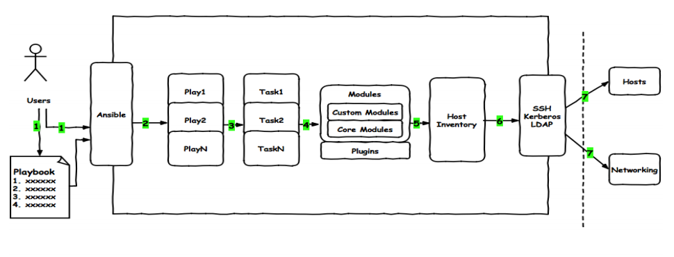
Hosts：
作用：playbook中的每一个play的目的都是为了让某个或某些主机以某个指定的用户
身份执行任务。hosts用于指定要执行指定任务的主机，须事先定义在主机清单中
可以是如下形式：
one.example.com
one.example.com:two.example.com
192.168.1.50
192.168.1.*
websrvs:dbsrvs 两个组的并集
websrvs:&dbsrvs 两个组的交集
webservers:!dbsrvs 在websrvs组，但不在dbsrvs组
示例:
– hosts: websrvs：dbsrvs
remote_user：
作用：可用于Host和task中。也可以通过指定其通过sudo的方式在远程主机上执行任务，
其可用于play全局或某任务；此外，甚至可以在sudo时使用sudo_user指定sudo时切换的
用户
– hosts: websrvs
remote_user: root
tasks:
– name: test connection
ping:
remote_user: magedu
sudo: yes 默认sudo为root
sudo_user:wang sudo为wang
tasks：
作用：任务列表
格式：module: arguments
注意：shell和command模块后面跟命令，而非key=value
检查playbook：
ansible-playbook -C file.yml
运行playbook的方式：
ansible-playbook <filrname.yml> …[options]
options：
–check 只检测可能会发生的改变，但不真正的操作
–list-hosts 列出运行任务的主机
–limit 主机列表 只针对主机列表中的主机执行
-v,-vv,-vvv 显示详细过程
一个最简单的Playbook需包含的基础组件有host、remote_user、tasks
示例1：
vim http.yml
—
– hosts: websrvs
remote_user: root
tasks:
– name: create new file
file: name=/data/newfile state=touch
– name: create new file
user: name=test2 system=yes shell=/sbin/nologin
– name: install package
yum: name=httpd
– name: copy index
copy: src=/var/www/html/index.html dest=/var/www/html/
– name: start service
service: name=httpd state=started enabled=yes
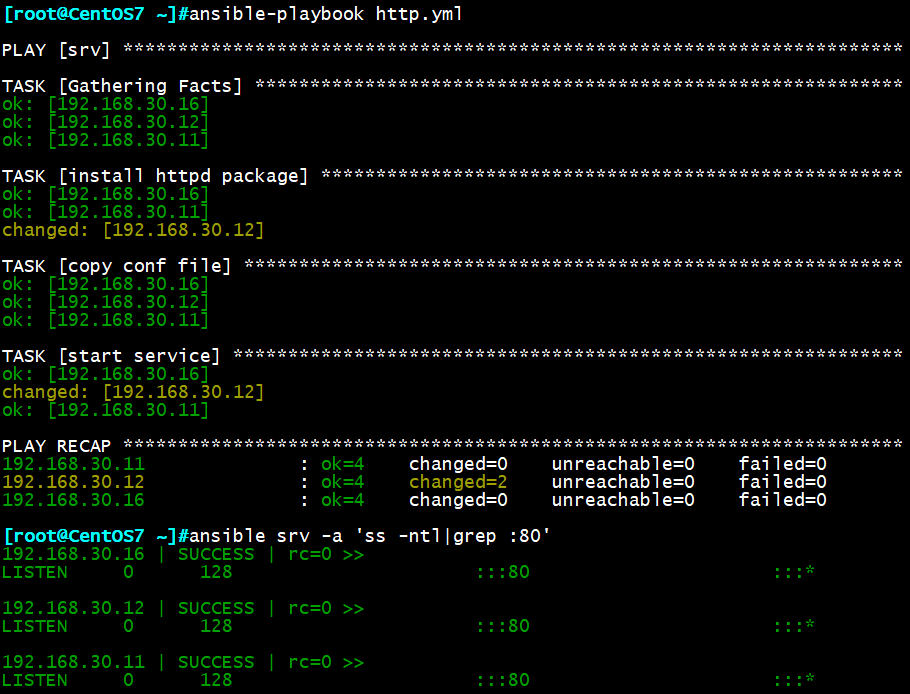
tags标签
task**任务也可以通过”tags”打标签，而后可在ansible-playbook命令上使用-t指定进行调用**
示例2：使用tags
vim http.yml
—
– host: websrvs
remote_user: root
tasks:
– name: install httpd package
yum: name=httpd
tags: inshttpd
– name: copy conf file
copy: src=files/httpd.conf dest=/etc/httpd/conf/ backup=yes
tags: cphttpd
– name: start service
service: name=httpd state=startd enable=yes
tags: rshttpd
ansible-playbook -t rshttpd httpd.yml 单独执行rshttp
注：多个动作可共用一个tags标签
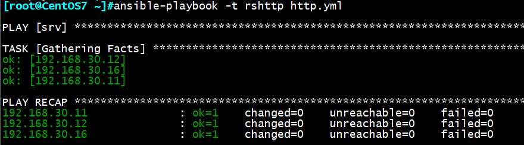
三、Playbook中handler的使用
由于Ansible幂等性的特性，有时前一个task发生了变化，后续的task无变化并不会重新执行，
但后续的task却可能受前一个task变化而影响。使用hanlder和notify即可解决此问题，handler
用于当关注的资源发生变化时，才会采取一定的操作。在notify中列出的操作称为handler，
也即notify中调用handler中定义的操作
示例：
vim http.yml
—
– host: websrvs
remote_user: root
tasks:
– name: install httpd package
yum: name=httpd
– name: copy conf file
copy: src=files/httpd.conf dest=/etc/httpd/conf/ backup=yes
– name: start service
service: name=httpd state=startd enable=yes
vim /files/httpd.conf
Listen 8080
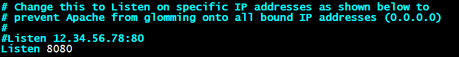
ansible-playbook http.yml
此时无法重启服务，端口仍为80
vim http.yml
—
– host: websrvs
remote_user: root
tasks:
– name: install httpd package
yum: name=httpd
– name: copy conf file
copy: src=files/httpd.conf dest=/etc/httpd/conf/ backup=yes
notify: restart service
– name: start service
service: name=httpd state=startd enable=yes
handlers:
– name: restart service
service: name=httpd state=restarted
由于httpd.conf发生了变化，触发了notify，执行相应的handler操作，httpd服务重启后
监听端口变为8080
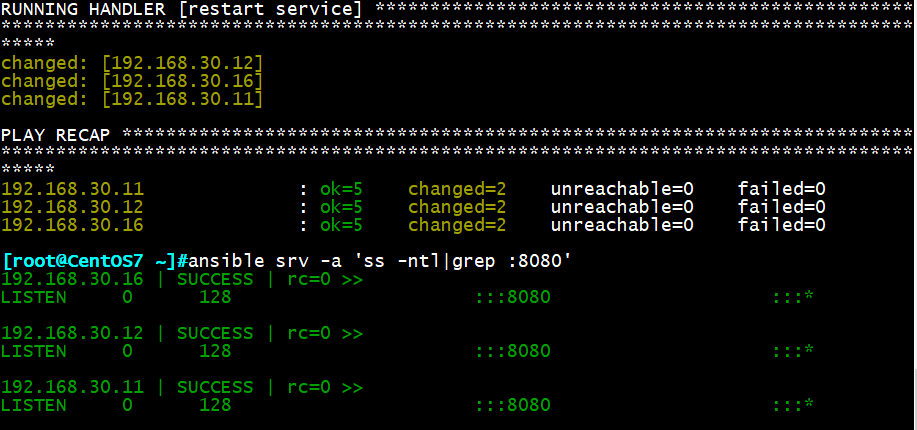
四、Playbook中变量的使用
变量名：仅能由字母、数字和下划线组成，且只能以字母开头
变量来源：
1.ansible all -m setup 远程主机的所有变量都可直接调用
2.在/etc/ansible/hosts中定义
普通变量：主机组中主机单独定义，优先级高于公共变量
host分组变量：针对主机组中所有主机定义统一变量
3.通过命令行指定变量，优先级最高
例如：ansible-playbook –e varname=value
4.在playbook中定义
vars:
– var1: value1
– var2: value2
5.在role中定义
变量定义：key=value
示例：http_port=80
变量调用方式：
通过 调用变量，且变量名前后必须有空格，有时用””才生效
变量调用优先级：
命令行-e > playbook定义 > hosts普通变量 > host分组变量
示例1：命令行变量赋值
vim app.yml
—
– hosts: appsrvs
remote_user: root
tasks:
– name: install package
yum: name=
– name: start service
service: name= state=started enabled=yes
变量赋值并执行：
ansible-playbook -e ‘pkname=vsftpd’ app.yml
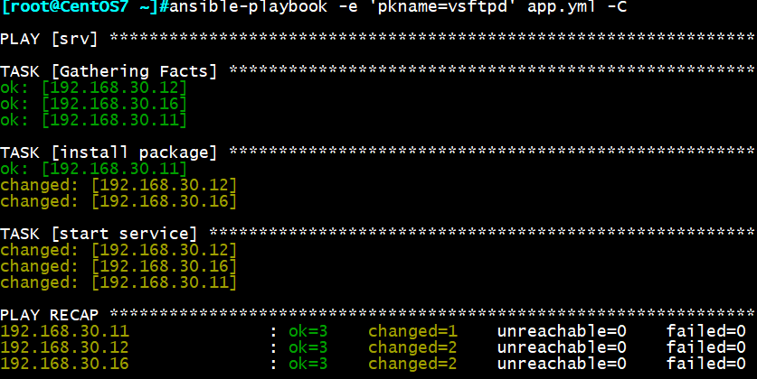
示例2：playbook中赋值变量
vim app.yml
—
– hosts: appsrvs
remote_user: root
vars:
– pkname1: httpd
– pkname2: vsftpd
tasks:
– name: install package
yum: name=
– name: install package
yum: name=
ansible-playbook app.yml
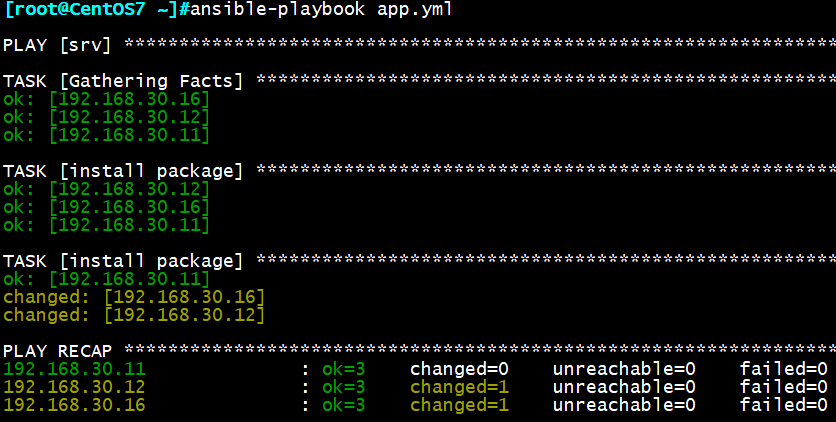
示例3：hosts文件中定义普通变量
vim /etc/ansible/hosts
192.168.30.101 httpd_port=81
192.168.30.102 httpd_port=82
vim hostname.yml
—
– hosts: websrvs
remote_user: root
tasks:
– name: set hostname
hostname: name=www.magedu.com
ansible-playbook -C hostname.yml
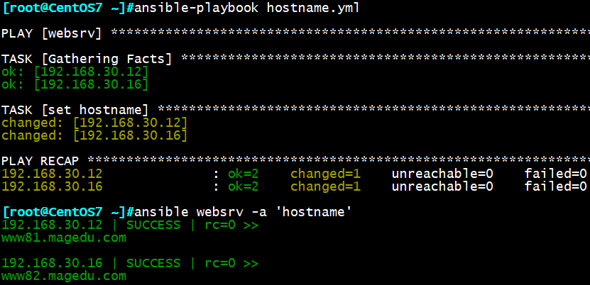
示例4：hosts文件中定义分组变量
vim /etc/ansible/hosts
[websrv:vars]
nodename=www
domainname=wxlinux.com
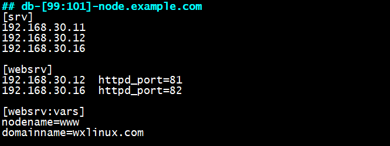
vim hostname2.yml
—
– hosts: websrvs
remote_user: root
tasks:
– name: set hostname
hostname: name=.
ansible-playbook hostname.yml

示例5：引用系统自带变量
ansible all -m setup |grep ansible_fqdn 查看系统自带变量
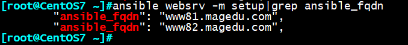
vim var.yml
—
– hosts: websrvs
remote_user: root
tasks:
– name: create log file
file: name=/data/.log state=touch
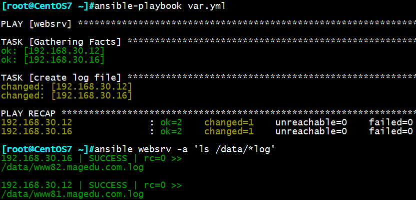
示例6：定义变量到一个文件中
vim vars.yml
var1: httpd
var2: vsftpd
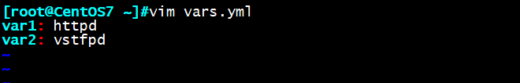
vim testvar.yml
—
– hosts: websrvs
remote_user: root
vars_files:
– vars.yml
tasks:
– name: install package
yum: name=
– name: create file
file: name=/data/.log state=touch
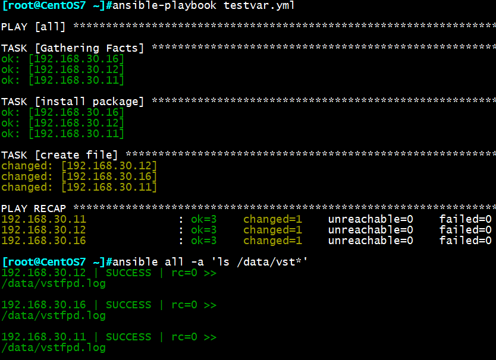